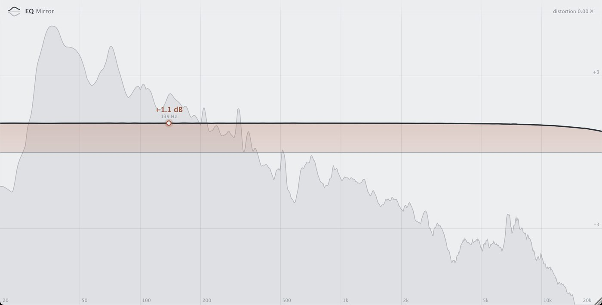

+1.1dB
Tube program EQ · every knob at 0真空管系プログラムEQ · ツマミはすべて 0
Every knob at zero, and still not flat.すべて 0 にしても、フラットにならない。
The whole band sits about a decibel up. If you want it truly flat, trim the output a little.帯域全体が約 1 dB 持ち上がっていました。本当にフラットにしたいなら、出力を少し下げます。